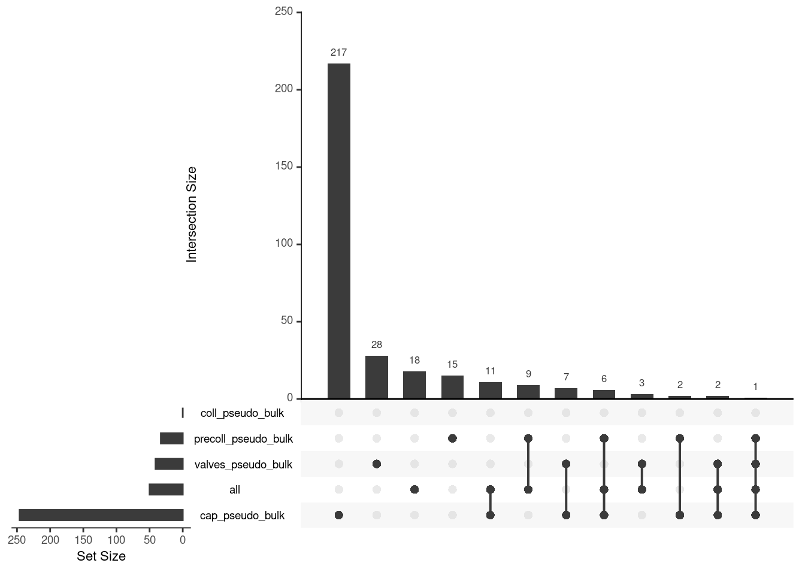

library(scran)
library(dplyr)
library(tidyr)
library(ggplot2)
library(scuttle)
library(pheatmap)
library(ComplexHeatmap)
library(UpSetR)
library(patchwork)
library(EnhancedVolcano)
library(SingleCellExperiment)
library(stringr)
library(gridExtra)vis_de
Visualize DE results
Preambel
Libraries
Helper functions
Code
# volcano plot function as defined in https://github.com/HelenaLC/TLS-Silina/blob/main/code/geo-02-differential.qmd
.volcano <- \(df, title, fdr = 0.05, lfc = 1, select_lab = NULL) {
EnhancedVolcano(df,
x = "logFC", y = "FDR",
FCcutoff = lfc, pCutoff = fdr,
selectLab = select_lab,
pointSize = 1.7, raster = TRUE,
title = title, subtitle = NULL,
lab = rownames(df), labSize = 4,
drawConnectors = TRUE, widthConnectors = 0.5) +
guides(col = guide_legend(override.aes = list(alpha = 1, size = 5))) +
theme_bw(9) + theme(
aspect.ratio = 1,
legend.title = element_blank(),
panel.grid.minor = element_blank())
}Data objects
pb_de_files <- list.files("../out/de/20231024", pattern = ".csv", full.names = T)
pb_de_names <- list.files("../out/de/20231024", pattern = ".csv", full.names = F)
pb_de <- lapply(pb_de_files, read.csv, row.names=1)
names(pb_de) <- gsub("\\.csv","",pb_de_names)
names(pb_de)[1] "cap_pseudo_bulk" "coll_pseudo_bulk" "DEA"
[4] "precoll_pseudo_bulk" "valves_pseudo_bulk" sce <- readRDS(file.path("..", "data", "sce_all_metadata_genes.rds"))
#list to map de names to cell type names
ct_nam <- list("cap_pseudo_bulk" = c("capillary"),
"precoll_pseudo_bulk" = c("precollector"),
"valves_pseudo_bulk" = c("valve"))
sce$ct_broad <- sce$cell_type_name |> forcats::fct_collapse(
"capillary" = c("1 capillary1", "2 capillary2"),
"precollector" = c("3 precollector1", "4 precollector2"),
"collector" = c("5 collector"),
"valve" = c("6 valve"),
"prolieferative" = c("7 proliferative"))Visualizations
Volcano(s)
for (. in names(pb_de)) {
p <- .volcano(df = pb_de[[.]], title = ., fdr = 0.05, lfc = 0.75)
cat("####", ., "\n"); print(p); cat("\n\n")
}Warning: ggrepel: 245 unlabeled data points (too many overlaps). Consider
increasing max.overlaps
Warning: One or more p-values is 0. Converting to 10^-1 * current lowest
non-zero p-value... #### DEA
#### DEA
Warning: ggrepel: 493 unlabeled data points (too many overlaps). Consider
increasing max.overlaps
Warning: ggrepel: 14 unlabeled data points (too many overlaps). Consider
increasing max.overlaps
Warning: ggrepel: 23 unlabeled data points (too many overlaps). Consider
increasing max.overlaps
Pseudobulk Heatmap
Code
sce_sub <- sce[,!sce$tissue %in% "mixed"]
summed <- aggregateAcrossCells(sce_sub,
id=colData(sce_sub)[,c("tissue", "ct_broad", "donor")],
use.assay.type = "counts")
rownames(summed) <- gsub("^.*\\.","",rownames(summed))
# subset res to de-genes
de_list <- lapply(pb_de, function(.){
top <- as.data.frame(.) |>
filter(FDR < 0.01) |>
slice_max(abs(logFC), n = 20)
})
drop_ind <- which(sapply(de_list, nrow) < 1)
drop_ind2 <- which(names(de_list) %in% "DEA")
de_gen_list <- de_list[-c(drop_ind, drop_ind2)]
for (. in names(de_gen_list)) {
sub <- summed[,colData(summed)$ct_broad %in% ct_nam[[.]]]
mtx_sub <- log1p(assays(sub)[["counts"]][rownames(de_gen_list[[.]]),])
colnames(mtx_sub) <- paste0("pseudobulk_", seq_along(1:ncol(sub)))
cd <- data.frame("tissue" = sub$tissue)
rownames(cd) <- colnames(mtx_sub)
hm <- pheatmap(mtx_sub,
main = ., fontsize = 6,
col = rev(hcl.colors(51, "RdBu")),
scale = "row",
show_colnames = FALSE,
cluster_cols = FALSE,
annotation_col = cd)
cat("####", ., "\n"); draw(hm); cat("\n\n")
}


UpSet plot
upset_list <- lapply(pb_de, function(de_res){
de_res <- de_res |>
filter(FDR < 0.05 & abs(logFC) > 0.75)
rownames(de_res)
})
upset(fromList(upset_list), order.by = "freq")